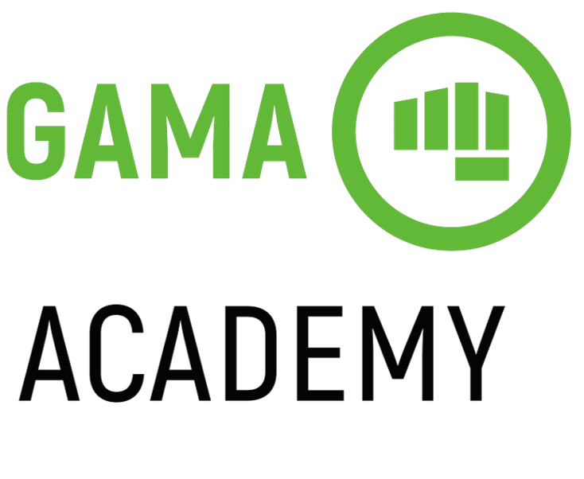
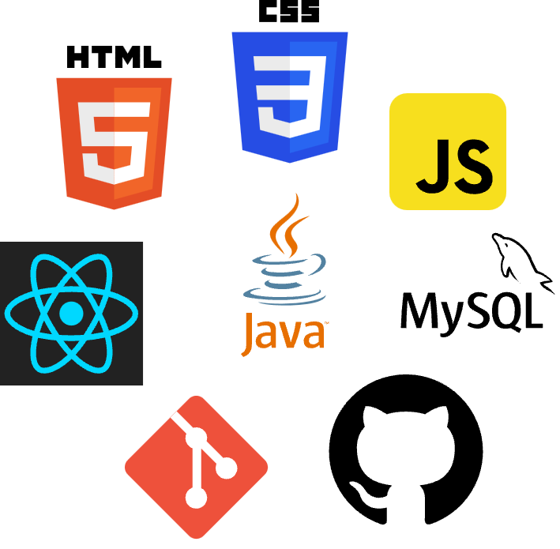

Natural de Salvador-Ba, apresenta bom relacionamento interpessoal, comprometimento com o trabalho, disposição para aprender, boa capacidade de liderança e perfil analítico.
Estudante do Curso Tecnólogo em Análise e Desenvolvimento de Sistemas
do Centro Universitário Senac, cursando o 3º semestre com previsão de conclusão em 07/2024.

Estudante do Gama Experience #49, para formação de desenvolvedor Web, com conclusão em 07/2023.

Realizou cursos na área de Tecnologia da informação com foco no desenvolvimento de software.